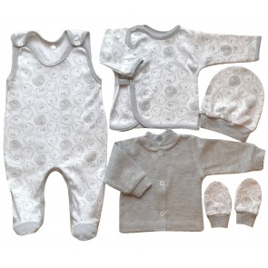

DRABUŽIAI KŪDIKIAMS 0-12 mėn. » MaTaTa- Drabužiai vaikams Drabužiai kūdikiams Rūbai vaikams
 Sveikas lankytojau, jūs galite prisijungti ar sukurti paskyrą . Paskyra Sveikas lankytojau, jūs galite prisijungti ar sukurti paskyrą . Informacija Apie mus Pirkimo Taisyklės Atsiskaitymo būdai Prekių pristatymas Prekių grąžinimas Privatumo politika Mūsų draugai KONTAKTAI Vartotojų teisių apsauga Susisiekite Grąžinimai Svetainės medis Krepšelį Vykdyti užsakymą Naujienos Informacija Naujienos Paskyra --> Krepšelį --> Vykdyti užsakymą Susisiekite Grąžinimai Svetainės medis Apie mus Pirkimo Taisyklės Atsiskaitymo būdai Prekių pristatymas Prekių grąžinimas Privatumo politika Mūsų draugai KONTAKTAI Vartotojų teisių apsauga Norų sąrašas (0) Turite klausimų ? +370 615 20577 Cart Meniu Pradžia D.D.Step BATUKAI KŪDIKIAMS IR VAIKAMS DRABUŽIAI KŪDIKIAMS 0-12 mėn. DRABUŽIAI MERGAITĖMS DRABUŽIAI BERNIUKAMS PROGINĖ APRANGA VAIKAMS DOVANOS KŪDIKIAMS IR VAIKAMS IŠPARDAVIMAS PradžiaKrepšelis
0 prekė(s) - 0.00€ Jūsų pirkinių krepšelis tuščias! Pradžia / DRABUŽIAI KŪDIKIAMS 0-12 mėn. Gamintojai --- Pasirinkite --- AGBO AJS Ativo Babaluno BabyB BEEZY BEMBI Cango Kidswear D.D.Step (Vengrija) DIRKJE FLAMINGO textile Funky Diva Gatta JAMIKS Just essentials Kamon Kita Korlėja Lily&Lola Lorita LUTIK MiniKidz Minoti NINI Pagaminta Europoje Pagaminta Lietuvoje RAC Respect Ritico RODENG RUDDY Soft Touch Soul&Glory Suzie Sweet Mario Trele Morele TUTU VALIANLY Veilo VILAURITA WOLA ZUZIA Kategorijos D.D.Step BATUKAI KŪDIKIAMS IR VAIKAMS - D.D. Step batai berniukams - Basutės - CANVAS - LED batai - Pavasariui/Rudeniui - Pusiau atviri - Sportiniai bateliai - Tapukai - Žieminiai - D.D. Step batai mergaitėms - Basutės - CANVAS - LED batai - Pavasariui/Rudeniui - Pusiau atviri - Sportiniai bateliai - Tapukai - Žieminiai - Gimnastikos-Šokių bateliai (češkės) KALĖDINĖS DOVANOS KEPURĖS, ŠALMAI IR KITI AKSESUARAI - Kepurės vasarai - Pirštinės vaikams - Rudeniui/Pavasariui - Žieminės DRABUŽIAI KŪDIKIAMS 0-12 mėn. - DRABUŽĖLIAI IŠVIRKŠČIOMIS SIŪLĖMIS - Miegmaišiai kūdikiams - EKOLOGIŠKA MEDVILNĖ NAUJAGIMIAMS - MERINO VILNA - NAUJAGIMIO KRAITELIAI - KOLEKCIJOS - Animals - Citrina - Dots - Juodi taškeliai - Mažasis futbolininkas - Mėlynos gėlytės - Mouse - My Little Flower - Pelytė - Shark - Zebra - Šilti drabužėliai (su pūkeliu viduje ) - Wonderland - Džemperiukai, megztukai - Batukai kūdikiams - Golfai - Galvajuostės, skarelės - Kelnytės - be pėdučių - su pėdutėm - Kelnės, džinsai - Komplektukai berniukams - Komplektukai mergaitėms - Kepurės kūdikiams - Lauko kepurės - Marškinėliai - Kojinės ir pėdkelnės - Pledai - Romperiai - Šliaužtinukai - Smėlinukai, siaustinukai, marškinėliai - Berankoviai smėlinukai - Marškinėliai - Smėlinukai ilgomis rankovėmis - Smėlinukai trumpomis rankovėmis - Smėlinukai su užsegimu priekyje - Siaustinukai - Susiaučiami siaustinukai - Suknelės, palaidinės mergaitėms - Lauko kombinezonai - Seilinukai ir pirštinės - Veliūriniai drabužiai - Vystyklai DRABUŽIAI MERGAITĖMS - Džemperiai - Golfai - Kelnės, džinsai - Komplektai mergaitėms - Megztukai, švarkeliai - MOKYKLINĖ UNIFORMA IR PRIEDAI - Palaidinės ilgom rankovėm - Palaidinės trumpom rankovėm - Sijonai - Smėlinukai 92,98 cm - Šortai - Striukės ir kombinezonai - Suknelės ir sarafanai - PIŽAMOS, APATINIS TRIKOTAŽAS - KOJINĖS IR PĖDKELNĖS - TAMPRĖS (timputės) - KEPURĖS DRABUŽIAI BERNIUKAMS - Džemperiai - Golfai - Kelnės - Kojinės, pedkelnės - Komplektai berniukams - Liemenės - Marškinėliai ilgomis rankovėmis - Marškinėliai trumpomis rankovėmis - Marškiniai - Megztiniai - Smėlinukai 92,98 cm - Sniego kelnės - Šortai - Striukės ir kombinezonai - Švarkeliai - PIŽAMOS, APATINIS TRIKOTAŽAS - MOKYKLINĖ UNIFORMA IR PRIEDAI - KEPURĖS PROGINĖ APRANGA VAIKAMS DOVANOS KŪDIKIAMS IR VAIKAMS IŠPARDAVIMAS Filtrai Dydis Naujagimis 48-50 cm (73) Naujagimis 56 cm (321) 62 cm. (343) 68 cm. (238) 74 cm. (236) 80 cm. (168) 86 cm. (121) 92 cm. (45) 98 cm. (18) 104 cm. (2) 110 cm. (1) 122 cm. (1) 0-6 mėn. (1) 0-3 mėn. (1) 12-18 mėn. (5) SS (3) S (4) 1000*1000 (1) 15-17 (2) 44 (1) 46 (1) 42 (1) Spalva Rožinė (1) Žydra (1) Salotinė (3) Gelsva (3) Rausva (5) Melsva (5) 6 (1) 1 (3) 5 (4) Mėtinė (1) 4 (3) 3 (5) 2 (2) Patvirtinti Drabužiai vaikams su nuolaida right left Apatiniai marškinėliai trumpom... Į atmintinę 2.74€ 3.65€ - 25% Apatiniai marškinėliai trumpom... Į atmintinę 2.74€ 3.65€ - 25% Avietinės spalvos palaidinė... Į atmintinę 6.38€ 8.50€ - 25% Avietinis golfas... Į atmintinę 6.38€ 8.50€ - 25% Baltas berankovis smėlinukas... Į atmintinę 3.74€ 4.99€ - 25% Baltas komplektukas (melsva ap... Į atmintinę 11.66€ 12.95€ - 10% Baltas komplektukas (rausva ap... Į atmintinę 11.66€ 12.95€ - 10% Baltas smėlinukas "Hello WINTE... Į atmintinę 4.27€ 6.10€ - 30% Baltas smėlinukas ilgomis rank... Į atmintinę 4.41€ 4.90€ - 10% Baltas smėlinukas trumpomis ra... Į atmintinę 3.87€ 4.30€ - 10%Patikslinkite paiešką
DRABUŽĖLIAI IŠVIRKŠČIOMIS SIŪLĖMIS
Miegmaišiai kūdikiams
EKOLOGIŠKA MEDVILNĖ NAUJAGIMIAMS
MERINO VILNA
NAUJAGIMIO KRAITELIAI
KOLEKCIJOS
Džemperiukai, megztukai
Batukai kūdikiams
Golfai
Galvajuostės, skarelės
Kelnytės
Kelnės, džinsai
Komplektukai berniukams
Komplektukai mergaitėms
Kepurės kūdikiams
Lauko kepurės
Marškinėliai
Kojinės ir pėdkelnės
Pledai
Romperiai
Šliaužtinukai
Smėlinukai, siaustinukai, marškinėliai
Suknelės, palaidinės mergaitėms
Lauko kombinezonai
Seilinukai ir pirštinės
Veliūriniai drabužiai
Vystyklai Rodyti: Lentelę / Sąrašą Rodyti: 25 50 75 100 Standartu Pavadinimas A - Ž Pavadinimas Ž - A Kaina nuo mažiausios Kaina nuo didžiausios Modelis A - Ž Modelis Ž - A Prekių palyginimas (0) Medvilninės šiltos (su pūkeliu) pirštinės naujagimiui 56 dydžio 1.30€ Į atmintinę Medvilninės šiltos su pūkeliu pirštinės naujagimiui Pagaminta minkšto ir švelnaus triko.. BEMBI Medvilninės šiltos (su pūkeliu) pirštinės naujagimiui 56 dydžio 1.30€ Į atmintinę Medvilninės šiltos su pūkeliu pirštinės naujagimiui Pagaminta minkšto ir švelnaus triko.. BEMBI Medvilninės šiltos (su pūkeliu) pirštinės naujagimiui 56 dydžio 1.30€ Į atmintinę Medvilninės šiltos su pūkeliu pirštinės naujagimiui Pagaminta minkšto ir švelnaus triko.. BEMBI Medvilninės šiltos (su pūkeliu) pirštinės naujagimiui 56 dydžio (salotinės) 1.30€ Į atmintinę Medvilninės šiltos pirštinės su pūkeliu naujagimiui Pagaminta iš minkšto ir švelnaus trikotaž.. BEMBI
Turimi dydžiai:
1000*1000 Rankšluostis su gobtuvu 1000*1000 Pingvi 19.50€ Į atmintinę Minkštas ir švelnus rankšluostis su gobtuvu, išmatavimai 1000*1000 cm Sudėtis: 100% medvil.. BEMBITurimi dydžiai:
Naujagimis 56 cm 62 cm. 68 cm. Veliūrinis komplektukas Little Friend šviesiai melsvas 16.50€ Į atmintinę Komplektukas iš 2-jų dalių : veliūriniai šliaužtinukai ir kepurytė Sudėtis: 80% medviln.. BEMBITurimi dydžiai:
Naujagimis 56 cm Veliūrinis komplektukas Little Friend melsvas 16.50€ Į atmintinę Komplektukas iš 2-jų dalių : veliūriniai šliaužtinukai ir kepurytė Sudėtis: 80% medviln.. BEMBITurimi dydžiai:
Naujagimis 56 cm Veliūrinis komplektukas mergaitei I Fly nefrito spalvos 16.50€ Į atmintinę Komplektukas iš 2-jų dalių : veliūriniai šliaužtinukai ir kepurytė Sudėtis: 80% medviln.. BEMBITurimi dydžiai:
Naujagimis 56 cm 62 cm. 68 cm. Veliūrinis komplektukas mergaitei I Fly gelsvas 16.50€ Į atmintinę Komplektukas iš 2-jų dalių : veliūriniai šliaužtinukai ir kepurytė Sudėtis: 80% medviln.. BEMBITurimi dydžiai:
Naujagimis 56 cm Veliūrinis komplektukas mergaitei Cute baby rausvas 16.50€ Į atmintinę Komplektukas iš 2-jų dalių : veliūriniai šliaužtinukai ir kepurytė Sudėtis: 80% medviln.. BEMBITurimi dydžiai:
68 cm. 74 cm. 80 cm. Šilti šliaužtinukai su pūkeliu Bembi 7.45€ Į atmintinę Šilti( su pūkeliu), minkšti šliaužtinukai kūdikiui be rankovių, susegami spaudėmis. S.. BEMBITurimi dydžiai:
Naujagimis 56 cm Ekologiškos medvilnės šliaužtinukai naujagimiui Natural 10.20€ 9.18€ - 10% Į atmintinę Pieno spalvos šliaužtinukai kūdikiui, priekyje susegamas spaudėmis, su pirštinėmis. .. BEMBI Melsvas marlinis vystyklas 70*80 cm 1.40€ Į atmintinę Rausvas marlinis vystyklas Išmatavimai 70*80 cm Sudėtis: 100% medvilnė Tinka skalbti 40 l.. Kita Marlinis (tetra) vystyklas 70*80 cm (pony) 1.90€ Į atmintinę Marlinis (tetra) vystyklas Išmatavimai 70*80 cm Sudėtis: 100% medvilnė Tinka skalbti 40 l.. Kita Flanelinis vystyklas 70*80 cm (rausvas su taškiukais) 2.35€ Į atmintinę Flanelinis vystyklas Išmatavimai 70*80 cm Sudėtis: 100% medvilnė Tinka skalbti automatinė.. Kita Flanelinis vystyklas 70*80 cm (karunos) 2.35€ Į atmintinę Flanelinis vystyklas Išmatavimai 70*80 cm Sudėtis: 100% medvilnė Tinka skalbti automatinė.. Kita Flanelinis vystyklas 70*80 cm (pilki drambliukai) 2.35€ Į atmintinę Flanelinis vystyklas Išmatavimai 70*80 cm Sudėtis: 100% medvilnė Tinka skalbti automatinė.. Kita Flanelinis vystyklas 70*80 cm (draugai) 2.35€ Į atmintinę Flanelinis vystyklas Išmatavimai 70*80 cm Sudėtis: 100% medvilnė Tinka skalbti automatinė.. Kita Muslino bambukinis vystyklas 60*60 cm (pilkos žvaigždės) 4.90€ Į atmintinę Muslino bambukinis vystyklas Išmatavimai 60*60 cm Aukščiausios kokybės natūralus muslino bambuko pl.. Kita Muslino bambukinis vystyklas 60*60 cm (leo) 4.90€ Į atmintinę Muslino bambukinis vystyklas Išmatavimai 60*60 cm Aukščiausios kokybės natūralus muslino bambuko pl.. Kita Baltas aukštos kokybės marlės vystyklas 80*80 cm 1.50€ Į atmintinę Baltas aukštos kokybės marlės vystyklas Išmatavimai 80*80 cm Sudėtis: 100% medvilnė Tinka.. Kita Baltas aukštos kokybės marlės vystyklas 60*80 cm 1.30€ Į atmintinę Baltas aukštos kokybės marlės vystyklas Išmatavimai 60*80 cm Sudėtis: 100% medvilnė Tinka.. Kita Baltas marlinis vystyklas 40*80 cm 1.05€ Į atmintinę Baltas marlinis vystyklas Išmatavimai 40*80 cm Sudėtis: 100% medvilnė Tinka skalbti 40 la.. Kita Baltas marlinis vystyklas 50*80 cm 1.20€ Į atmintinę Baltas marlinis vystyklas Išmatavimai 50*80 cm Sudėtis: 100% medvilnė Tinka skalbti 40 la.. Kita Muslino bambukinis vystyklas 120*120 cm (teddy) 10.30€ Į atmintinę Muslino bambukinis vystyklas Išmatavimai 120*120 cm Aukščiausios kokybės natūralus muslino bambuko .. KitaTurimi dydžiai:
80 cm. Nini organinės medvilnės komplektas My Little Flower 19.90€ Į atmintinę Organinės medvilnės, minkšto trikotažo prailginta palaidinė ir plonos kelnės kūdikiui Pagaminta iš .. NINITurimi dydžiai:
74 cm. 80 cm. 86 cm. Nini organinės medvilnės galvajuostė My Little Flower 4.90€ Į atmintinę Organinės medvilnės galvajuostė Spalva: pieno / gėlės - rausva, geltona, tamsiai žalia Pag.. NINITurimi dydžiai:
74 cm. 80 cm. 86 cm. Nini organinės medvilnės galvajuostė My Little Flower 4.90€ Į atmintinę Organinės medvilnės galvajuostė Spalva: tamsiai žalia,pieno / gėlės - rausva, geltona, tamsia.. NINITurimi dydžiai:
Naujagimis 56 cm 62 cm. 68 cm. 74 cm. 80 cm. 86 cm. Nini organinės medvilnės kepurytė My Little Flower 6.80€ Į atmintinę Organinės medvilnės kepurytė Spalva: pieno / gėlės - rausva, geltona, tamsiai žalia Pagami.. NINITurimi dydžiai:
Naujagimis 56 cm 62 cm. 68 cm. 74 cm. 80 cm. 86 cm. Nini organinės medvilnės švarkelis su gobtuvu My Little flower 16.80€ Į atmintinę Organinės medvilnės švarkelis su gobtuvu Spalva: tamsiai žalia Pagaminta iš kokybiško, minkš.. NINITurimi dydžiai:
68 cm. 74 cm. 80 cm. 86 cm. Nini organinės medvilnės švarkelis My Little flower 14.80€ Į atmintinę Organinės medvilnės švarkelis Spalva: tamsiai žalia Pagaminta iš kokybiško, minkšto ir šveln.. NINITurimi dydžiai:
74 cm. 80 cm. 86 cm. 92 cm. Nini organinės medvilnės suknelė My Little flower 10.99€ Į atmintinę Organinės medvilnės suknelė Spalva: pieno/gėlės - rausva, geltona, tamsiai žalia Pagaminta i.. NINITurimi dydžiai:
Naujagimis 56 cm 62 cm. 68 cm. 74 cm. 80 cm. 86 cm. Nini organinės medvilnės romperis - šliaužtinukai My Little Flower 12.80€ Į atmintinę Romperis kūdikiui Spalva: tamsiai žalia Pagaminta iš kokybiško, minkšto ir švelnaus tr.. NINITurimi dydžiai:
Naujagimis 56 cm 62 cm. 68 cm. 74 cm. 80 cm. 86 cm. Nini organinės medvilnės kelnytės My Little Flower 10.50€ Į atmintinę Organinės mdvilnės kelnytės kūdikiui Spalva : tamsiai žalia Pagaminta iš kokybiško, minkšto ir š.. NINITurimi dydžiai:
Naujagimis 56 cm 62 cm. 68 cm. Nini organinės medvilnės kelnytės My Little Flower 6.70€ Į atmintinę Organinės mdvilnės kelnytės kūdikiui Spalva : tamsiai žalia Pagaminta iš kokybiško, minkšto ir š.. NINITurimi dydžiai:
62 cm. 68 cm. 80 cm. 86 cm. Nini palaidinė My Little flower 10.99€ Į atmintinę Palaidinė kūdikiui Spalva: pieno/gėlės - rausva, geltona, tamsiai žalia Pagaminta iš kokybiš.. NINITurimi dydžiai:
Naujagimis 56 cm 62 cm. 68 cm. 74 cm. 80 cm. 86 cm. Nini palaidinė My Little flower 8.80€ Į atmintinę Palaidinė kūdikiui Spalva: pieno/gėlės - rausva, geltona, tamsiai žalia Pagaminta iš kokybiš.. NINITurimi dydžiai:
Naujagimis 56 cm 62 cm. 68 cm. 74 cm. 80 cm. 86 cm. Nini organinės medvilnės kombinezonas - šliaužtinukai My Little Flower 11.70€ Į atmintinę Kombinezonas šiaužtinukai kūdikiui Spalva: pieno/gėlės - rausva, geltona, tamsiai žalia Paga.. NINITurimi dydžiai:
62 cm. 68 cm. Nini organinės medvilnės šliaužtinukai My Little Flower 8.95€ Į atmintinę Šliaužtinukai kūdikiui Spalva: pieno/gėlės - rausva, geltona, tamsiai žalia Pagaminta iš kok.. NINITurimi dydžiai:
62 cm. 68 cm. Nini organinės medvilnės šliaužtinukai My Little Flower 9.15€ Į atmintinę Šliaužtinukai kūdikiui Spalva: pieno, tamsiai žalia/gėlės - rausva, geltona, tamsiai žalia P.. NINITurimi dydžiai:
Naujagimis 56 cm 62 cm. 68 cm. 74 cm. 80 cm. 86 cm. 92 cm. 98 cm. Nini organinės medvilnės smėlinukas My Little flower 8.35€ Į atmintinę Smėlinukas kūdikiui Spalva: pieno/gėlės - rausva, geltona, tamsiai žalia Pagaminta iš kokybi.. NINITurimi dydžiai:
Naujagimis 56 cm 62 cm. 68 cm. Nini Glaustinukas My Little flower(pieno spl.) 8.35€ Į atmintinę Glaustinukas kūdikiui Spalva: pieno/gėlės - rausva, geltona, tamsiai žalia Pagaminta iš koky.. NINITurimi dydžiai:
Naujagimis 56 cm 62 cm. 68 cm. Nini Glaustinukas My Little flower 8.35€ Į atmintinę Glaustinukas kūdikiui Spalva: pieno/gėlės - rausva, geltona, tamsiai žalia Pagaminta iš koky.. NINITurimi dydžiai:
Naujagimis 56 cm 62 cm. 68 cm. Nini organinės medvilnės glaustinukas 8.45€ Į atmintinę Glaustinukas kūdikiui Pagaminta iš kokybiško, minkšto ir švelnaus trikotažo, kuris sertifikuotas &n.. NINITurimi dydžiai:
Naujagimis 56 cm 62 cm. 68 cm. Nini organinės medvilnės šiltas kombinezonas 25.90€ Į atmintinę Šiltas (dvygubos medvilnės), medvilninis kombinėzonas kūdikiui Pagaminta iš kokybiško, minkšto ir š.. NINITurimi dydžiai:
68 cm. Kepurė kūdikiui (pieno spl.) 2.30€ Į atmintinę &n.. FLAMINGO textileTurimi dydžiai:
Naujagimis 56 cm 62 cm. Kelnytės naujagimiui išvirkščiom siūlėm (persiko spl.) 3.50€ Į atmintinę Kelnytės naujagimiui išvirkščiom siūlėm Sudėtis: 100% medvilnė Pristatymo terminas: .. FLAMINGO textileTurimi dydžiai:
Naujagimis 56 cm Smėlinukas naujagimiui išvirkščiom siūlėm Meow (persiko spl.) 7.50€ Į atmintinę Minkštos ir švelnios medvilnės susiaučiamas smėlinukas išvirkščiom siūlėm, susegamas spaudėmis. .. FLAMINGO textileTurimi dydžiai:
Naujagimis 48-50 cm Naujagimis 56 cm 62 cm. Flamingo išvirkščiomis siūlėmis kombinezonas Meow (persiko spl.) 11.70€ Į atmintinę Švelnios ir minkštos medvilnės šliaužtinukai, - kombinezonas patogiai susegami spaudėmis... FLAMINGO textileTurimi dydžiai:
Naujagimis 56 cm 62 cm. Naujagimio kraitelis išvirkščiom siūlėm 3 d. Meow (persiko spl.) 13.20€ Į atmintinę 3 dalių švelnios medvilnės naujagimio kraitelis išvirkščiom siūlėm, jį sudaro 3 dalys: smėlinuk.. FLAMINGO textileTurimi dydžiai:
Naujagimis 56 cm 62 cm. Flamingo išvirkščiomis siūlėmis kombinezonas Zuikutis 11.70€ Į atmintinę Švelnios ir minkštos medvilnės šliaužtinukai, - kombinezonas patogiai susegami spaudėmis... FLAMINGO textileTurimi dydžiai:
Naujagimis 56 cm 62 cm. Naujagimio kraitelis išvirkščiom siūlėm 3 d. Zuikutis/rausvas 13.20€ Į atmintinę 3 dalių švelnios medvilnės naujagimio kraitelis išvirkščiom siūlėm, jį sudaro 3 dalys: smėlinuk.. FLAMINGO textileTurimi dydžiai:
Naujagimis 56 cm 62 cm. Naujagimio kraitelis išvirkščiom siūlėm 3 d. Zuikutis/baltas 13.20€ Į atmintinę 3 dalių švelnios medvilnės naujagimio kraitelis išvirkščiom siūlėm, jį sudaro 3 dalys: smėlinuk.. FLAMINGO textileTurimi dydžiai:
Naujagimis 56 cm 62 cm. Flamingo išvirkščiomis siūlėmis kombinezonas Meow 11.70€ Į atmintinę Švelnios ir minkštos medvilnės šliaužtinukai, - kombinezonas patogiai susegami spaudėmis... FLAMINGO textileTurimi dydžiai:
Naujagimis 56 cm 62 cm. Naujagimio kraitelis išvirkščiom siūlėm 3 d. Meow 13.20€ Į atmintinę 3 dalių švelnios medvilnės naujagimio kraitelis išvirkščiom siūlėm, jį sudaro 3 dalys: smėlinuk.. FLAMINGO textileTurimi dydžiai:
Naujagimis 56 cm 62 cm. Naujagimio kraitelis išvirkščiom siūlėm 3 d. Pedutės 9.99€ Į atmintinę 3 dalių švelnios medvilnės naujagimio kraitelis išvirkščiom siūlėm, jį sudaro 3 dalys: siaustin.. FLAMINGO textileTurimi dydžiai:
Naujagimis 56 cm 62 cm. Naujagimio kraitelis išvirkščiom siūlėm 3 d. Rudi taškiukai 9.99€ Į atmintinę 3 dalių švelnios medvilnės naujagimio kraitelis išvirkščiom siūlėm, jį sudaro 3 dalys: siaustin.. FLAMINGO textileTurimi dydžiai:
Naujagimis 56 cm Naujagimio kraitelis išvirkščiom siūlėm 3 d. Debesėliai 13.20€ Į atmintinę 3 dalių švelnios medvilnės naujagimio kraitelis išvirkščiom siūlėm, jį sudaro 3 dalys: smėlinuk.. FLAMINGO textileTurimi dydžiai:
Naujagimis 48-50 cm Naujagimis 56 cm Kombinezonas išvirkščiom siūlėm Magic 11.70€ Į atmintinę Švelnios medvilnės šliaužtinukai - kombinezonas išvikrščiom siūlėm, su pirštinėmis patogiai sus.. FLAMINGO textileTurimi dydžiai:
Naujagimis 56 cm 62 cm. Naujagimio kraitelis išvirkščiom siūlėm 3 d. Mommy s Hero 13.10€ 10.48€ - 20% Į atmintinę 3 dalių švelnios medvilnės naujagimio kraitelis išvirkščiom siūlėm, jį sudaro 3 dalys: smėlinuk.. FLAMINGO textileTurimi dydžiai:
Naujagimis 56 cm 62 cm. Naujagimio kraitelis išvirkščiom siūlėm 3 d. Little Princess 13.10€ 10.48€ - 20% Į atmintinę 3 dalių švelnios medvilnės naujagimio kraitelis išvirkščiom siūlėm, jį sudaro 3 dalys: smėlinuk.. FLAMINGO textileTurimi dydžiai:
Naujagimis 48-50 cm Flamingo kombinezonas išvirkščiom siūlėm Happych pilkas 8.90€ Į atmintinę Švelnios ir minkštos medvilnės šliaužtinukai, - kombinezonas patogiai susegami spaudėmis... FLAMINGO textileTurimi dydžiai:
Naujagimis 48-50 cm Flamingo kombinezonas išvirkščiom siūlėm Happych raudonas 8.90€ Į atmintinę Švelnios ir minkštos medvilnės šliaužtinukai, - kombinezonas patogiai susegami spaudėmis... FLAMINGO textileTurimi dydžiai:
68 cm. 74 cm. 80 cm. Smėlinukų komplektas 2 d. Bunny 13.30€ Į atmintinę Minkštos ir švelnios medvilnės smėlinukų komplektas Sudėtis: 100% medvilnė Pristatym.. FLAMINGO textileTurimi dydžiai:
Naujagimis 56 cm 62 cm. Siaustinukas naujagimiui išvirkščiom siūlėm 2.90€ Į atmintinę Plono ir švelnaus trikotažo siaustinukas naujagimiui išvirkščiom siūlėm, su pirštinemis Sudėtis: &.. FLAMINGO textileTurimi dydžiai:
Naujagimis 56 cm 62 cm. Siaustinukas naujagimiui išvirkščiom siūlėm 2.90€ Į atmintinę Plono ir švelnaus trikotažo siaustinukas naujagimiui išvirkščiom siūlėm, su pirštinemis Sudėtis: &.. FLAMINGO textileTurimi dydžiai:
Naujagimis 56 cm Smėlinukas naujagimiui išvirkščiomis siūlėmis Hi Im new here 7.70€ Į atmintinę Minkštos ir švelnios medvilnės susiaučiamas smėlinukas išvirkščiom siūlėm, susegamas spaudėmis. .. FLAMINGO textileTurimi dydžiai:
Naujagimis 56 cm 62 cm. Smėlinukas naujagimiui išvirkščiomis siūlėmis Rausvi ančiukai 5.50€ Į atmintinę Minkštos ir švelnios medvilnės susiaučiamas smėlinukas išvirkščiom siūlėm, susegamas spaudėmis. .. FLAMINGO textileTurimi dydžiai:
62 cm. Smėlinukas naujagimiui išvirkščiomis siūlėmis Melsvi ančiukai 5.50€ Į atmintinę Minkštos ir švelnios medvilnės susiaučiamas smėlinukas išvirkščiom siūlėm, susegamas spaudėmis. .. FLAMINGO textileTurimi dydžiai:
Smėlinukas naujagimiui išvirkščiomis siūlėmis Star 5.75€ Į atmintinę Minkštos ir švelnios medvilnės susiaučiamas smėlinukas išvirkščiom siūlėm, susegamas spaudėmis. .. FLAMINGO textileTurimi dydžiai:
Naujagimis 56 cm 62 cm. Smėlinukas naujagimiui išvirkščiomis siūlėmis Cutie pie 6.20€ Į atmintinę Minkštos ir švelnios medvilnės susiaučiamas smėlinukas išvirkščiom siūlėm, susegamas spaudėmis. .. FLAMINGO textileTurimi dydžiai:
Naujagimis 56 cm 62 cm. Smėlinukas naujagimiui išvirkščiomis siūlėmis Born in love 6.20€ Į atmintinę Minkštos ir švelnios medvilnės susiaučiamas smėlinukas išvirkščiom siūlėm, susegamas spaudėmis. .. FLAMINGO textile Medvilninės pirštinės naujagimiui 56 dydžio Melsvi taškiukai 1.45€ Į atmintinę Medvilninės pirštinės naujagimiui Pagaminta minkšto ir švelnaus trikotažo. Sud.. FLAMINGO textile Medvilninės pirštinės naujagimiui 56 dydžio Rausvi taškiukai 1.45€ Į atmintinę Medvilninės pirštinės naujagimiui Pagaminta minkšto ir švelnaus trikotažo. Sud.. FLAMINGO textile Trikotažinis vystyklas-paklodė 90*85 cm Obuoliukai 8.30€ Į atmintinę Trikotažinis minkštas vystyklas , didelis ir patogus. Išmatavimai 90*85cm Sudėtis: 10.. FLAMINGO textileTurimi dydžiai:
80 cm. 86 cm. 92 cm. Kombinezonas - romperis (be pėdučių) Hello 13.20€ Į atmintinę Vaikiškas kombinezonas romperis Pagaminta iš kokybiško, minkšto ir švelnaus trikotažo, kuris sert.. Sweet MarioTurimi dydžiai:
Naujagimis 56 cm 62 cm. Naujagimio kraitelis išvirkščiomis siūlėmis 2 d. Hello 11.90€ Į atmintinę 2 dalių švelnios plonos medvilnės naujagimio kraitelis išvirkščiomis siūlėmis, jį sudaro 2 daly.. Sweet MarioTurimi dydžiai:
Naujagimis 56 cm 62 cm. Naujagimio kraitelis išvirkščiomis siūlėmis 3 d. Hello 12.90€ Į atmintinę 3 dalių švelnios medvilnės naujagimio kraitelis išvirkščiomis siūlėmis, jį sudaro 3 dalys: smėl.. Sweet MarioTurimi dydžiai:
Naujagimis 56 cm 62 cm. Naujagimio kraitelis išvirkščiomis siūlėmis 3 d. Hello 11.95€ Į atmintinę 3 dalių švelnios plonos medvilnės naujagimio kraitelis išvirkščiomis siūlėmis, jį sudaro 3 daly.. Sweet MarioTurimi dydžiai:
Naujagimis 56 cm 62 cm. 68 cm. Komplektukas Meškiukai (su pūkeliu viduje ) rusvas 16.60€ 14.94€ - 10% Į atmintinę Komplektukas iš 3-jų dalių : šiltas (su pūkeliu) smėlinukas (priekyje susegamas spaudėmis),šilti šli.. BEMBITurimi dydžiai:
Naujagimis 56 cm 62 cm. 68 cm. Komplektukas Meškiukai (su pūkeliu viduje ) melsvas 16.60€ 14.94€ - 10% Į atmintinę Komplektukas iš 3-jų dalių : šiltas (su pūkeliu) smėlinukas (priekyje susegamas spaudėmis),šilti šli.. BEMBITurimi dydžiai:
Naujagimis 56 cm 62 cm. Komplektukas Meška (su pūkeliu viduje ) rusvas 13.95€ 12.56€ - 10% Į atmintinę Komplektukas iš 2-jų dalių : šiltas (su pūkeliu) šilti šliaužtinukai-kombinezonas ir kepurytė kūdiki.. BEMBITurimi dydžiai:
Naujagimis 56 cm 62 cm. 68 cm. Komplektukas Meška (su pūkeliu viduje ) melsvas 13.95€ 12.56€ - 10% Į atmintinę Komplektukas iš 2-jų dalių : šiltas (su pūkeliu) šilti šliaužtinukai-kombinezonas ir kepurytė kūdiki.. BEMBITurimi dydžiai:
Naujagimis 56 cm 62 cm. 68 cm. Komplektukas Meška (su pūkeliu viduje ) rusvas 13.95€ 12.56€ - 10% Į atmintinę Komplektukas iš 2-jų dalių : šiltas (su pūkeliu) šilti šliaužtinukai-kombinezonas ir kepurytė kūdiki.. BEMBITurimi dydžiai:
74 cm. 80 cm. 86 cm. Šilti (su pūkeliu) šliaužtinukai - kombinezonas Mia 11.45€ 10.31€ - 10% Į atmintinę Šilti (su pūkeliu) šliaužtinukai - kombinezonas Pagaminta iš kokybiškos, minkštos medvilnės .. BEMBITurimi dydžiai:
68 cm. Šilti (su pūkeliu) šliaužtinukai - kombinezonas Avytės 11.45€ 10.31€ - 10% Į atmintinę Šilti (su pūkeliu) šliaužtinukai - kombinezonas Pagaminta iš kokybiškos, minkštos medvilnės .. BEMBITurimi dydžiai:
74 cm. 80 cm. 86 cm. Šilti (su pūkeliu) šliaužtinukai - kombinezonas Saturn 11.45€ 10.31€ - 10% Į atmintinę Šilti (su pūkeliu) šliaužtinukai - kombinezonas Pagaminta iš kokybiškos, minkštos medvilnės .. BEMBITurimi dydžiai:
68 cm. Šilti (su pūkeliu) šliaužtinukai - kombinezonas Hi(melsv.) 11.45€ 10.31€ - 10% Į atmintinę Šilti (su pūkeliu) šliaužtinukai - kombinezonas Pagaminta iš kokybiškos, minkštos medvilnės .. BEMBITurimi dydžiai:
Naujagimis 56 cm Šliaužtinukai - kombinezonas Meškiukai 10.50€ 9.45€ - 10% Į atmintinę Šliaužtinukai - kombinezonas, su pirštinėmis.Patogiai susegami spaudėmis. Sudėti.. BEMBITurimi dydžiai:
Naujagimis 48-50 cm Šiltas (su pūkeliu) siaustinukas naujagimiui išvirkščiom siūlėm (melsvas) 5.75€ 5.18€ - 10% Į atmintinę Šiltas ir minkštas (su pūkeliu) siaustinukas naujagimiui išvirkščiom siūlėm, su pirštinemis Sudėti.. BEMBITurimi dydžiai:
68 cm. 74 cm. 80 cm. Komplektas mergaitei 2 d. 14.90€ 13.41€ - 10% Į atmintinę 2 dalių medvilninis komplektas mergaitei, ekologiškos medvilnės prailginta palaidinė ir šiltos medvi.. Sweet MarioTurimi dydžiai:
Naujagimis 56 cm 62 cm. 68 cm. 74 cm. Pliušinis kombinezonas kūdikiams Pilkas Angelas 24.60€ 22.14€ - 10% Į atmintinę Šiltas pliušinis (peliuko medžiagos) švelnus kombinezonas kūdikiams su gobtuvu, priekyje a.. Sweet MarioTurimi dydžiai:
62 cm. 74 cm. 80 cm. Šiltas pliušinis kombinezonas kūdikiams (rusvas) 18.90€ Į atmintinę Pliušinis (peliuko medžiagos) švelnus kombinezonas kūdikiams su gobtuvu, priekyje užsegama.. Sweet MarioTurimi dydžiai:
62 cm. 68 cm. 74 cm. 80 cm. Šiltas flisinis kombinezonas (rudos spalvos) 12.30€ Į atmintinę Šiltas flisinis kombinėzonas - šliaužtinukas . Puikiai tinka nešioti vėsesniais vasaros va.. Sweet MarioTurimi dydžiai:
Naujagimis 48-50 cm Naujagimis 56 cm Naujagimio kraitelis išvirkščiomis siūlėmis 2 d. Hello 12.00€ Į atmintinę 2 dalių švelnios plonos medvilnės naujagimio kraitelis išvirkščiomis siūlėmis, jį sudaro 2 daly.. Sweet MarioTurimi dydžiai:
Naujagimis 48-50 cm Naujagimis 56 cm Naujagimio kraitelis išvirkščiomis siūlėmis 2 d. Hello 12.00€ Į atmintinę 2 dalių švelnios plonos medvilnės naujagimio kraitelis išvirkščiomis siūlėmis, jį sudaro 2 daly.. Sweet MarioTurimi dydžiai:
Naujagimis 48-50 cm Naujagimis 56 cm 62 cm. Naujagimio kraitelis išvirkščiomis siūlėmis 3 d. Hello 12.70€ Į atmintinę 3 dalių švelnios plonos medvilnės naujagimio kraitelis išvirkščiomis siūlėmis, jį sudaro 3 daly.. Sweet MarioTurimi dydžiai:
Naujagimis 48-50 cm Naujagimis 56 cm 62 cm. Naujagimio kraitelis išvirkščiomis siūlėmis 3 d. Hello 11.80€ Į atmintinę 3 dalių švelnios plonos medvilnės naujagimio kraitelis išvirkščiomis siūlėmis, jį sudaro 3 daly.. Sweet MarioTurimi dydžiai:
Naujagimis 48-50 cm Naujagimis 56 cm 62 cm. Naujagimio kraitelis išvirkščiomis siūlėmis 3 d. Hello 11.80€ Į atmintinę 3 dalių švelnios plonos medvilnės naujagimio kraitelis išvirkščiomis siūlėmis, jį sudaro 3 daly.. Sweet MarioTurimi dydžiai:
Naujagimis 56 cm 62 cm. Naujagimio kraitelis išvirkščiomis siūlėmis 3 d. Laputės 12.70€ Į atmintinę 3 dalių švelnios medvilnės naujagimio kraitelis išvirkščiomis siūlėmis, jį sudaro 3 dalys: smėl.. Sweet Mario 1 2 3 4 5 6 7 8 9 | Rodoma nuo 1 iki 100 iš 893 (9 puslapių)+370 615 20577 Jonažolių g. 9-45, Vilnius, Lithuania info@matata.lt matata.lt